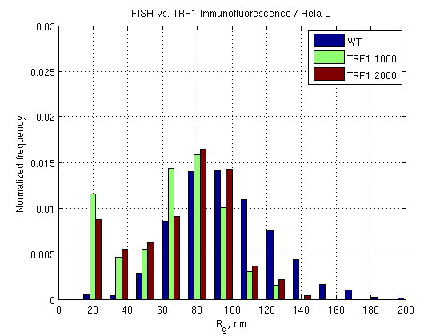
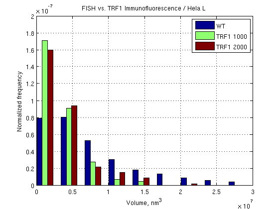
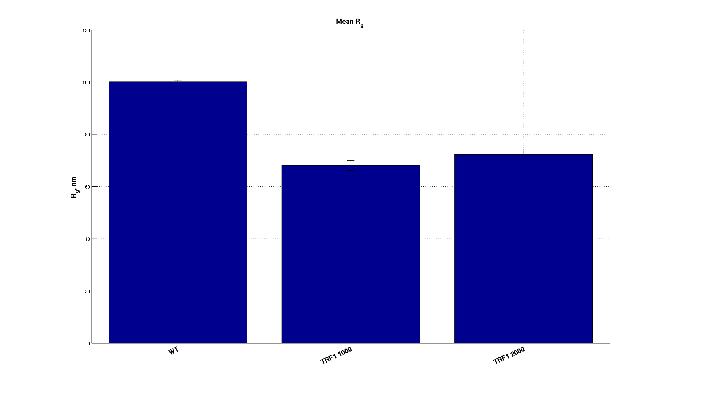
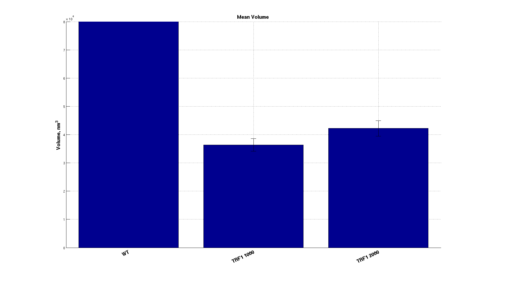
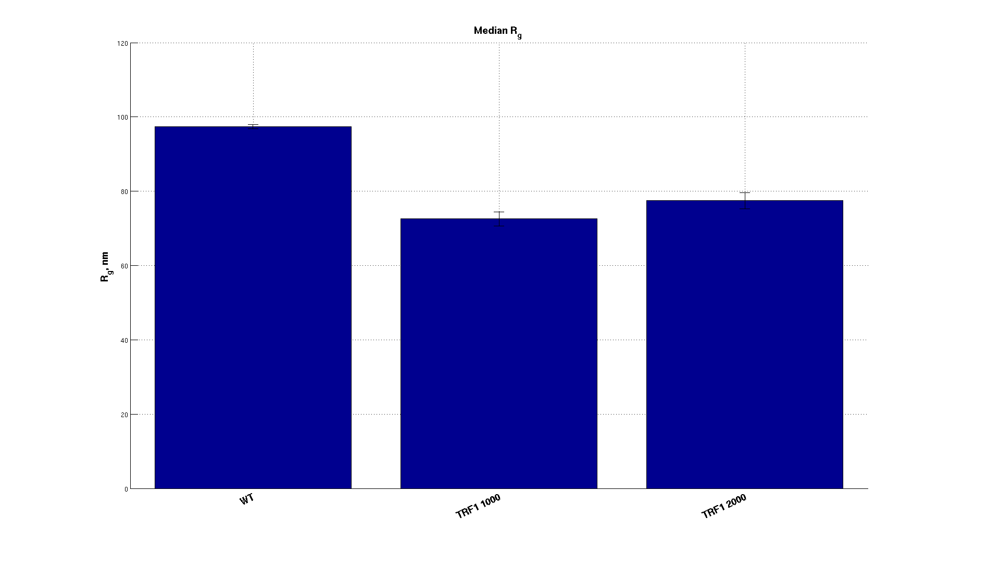
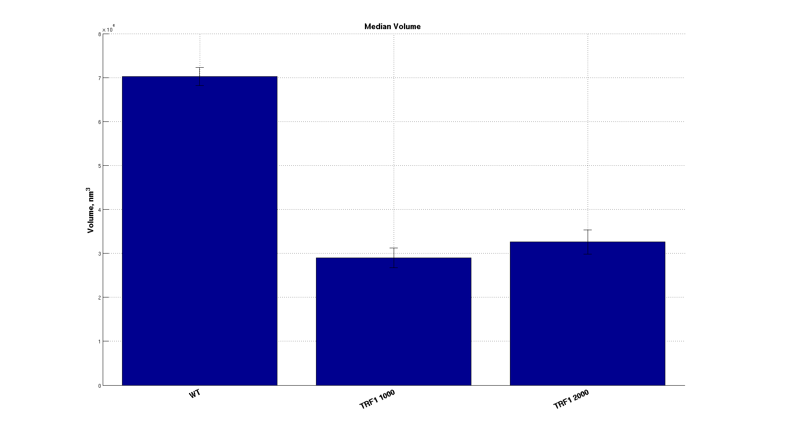

Contents
FISH vs. TRF1 IF : Hela L
===================================================================
Hela L FISH vs. TRF1 IF
===================================================================
===========================================================
Data for WT / L dataset
===========================================================
Radius of gyration
Mean: 100.6349 Std. Dev.: 29.5072 Median: 97.7308
Volume
Mean: 9499829.0093 Std. Dev.: 8579415.2327 Median: 6911738.7392
Number of localizations
Mean: 190.8449 Std. Dev.: 104.8795 Median: 167.0000
Number of clusters: 1857
===========================================================
Data for TRF1 1000 / L dataset
===========================================================
Radius of gyration
Mean: 69.4705 Std. Dev.: 27.9936 Median: 73.0636
Volume
Mean: 3638604.5468 Std. Dev.: 3104405.8225 Median: 2898836.5371
Number of localizations
Mean: 123.3093 Std. Dev.: 66.5796 Median: 109.0000
Number of clusters: 194
===========================================================
Data for TRF1 2000 / L dataset
===========================================================
Radius of gyration
Mean: 73.4237 Std. Dev.: 28.7541 Median: 78.3492
Volume
Mean: 4219815.8022 Std. Dev.: 3651905.7729 Median: 3259351.1387
Number of localizations
Mean: 144.3179 Std. Dev.: 83.1510 Median: 122.0000
Number of clusters: 173
 
FISH vs. TRF1 IF : Plots of Means
Current plot held
Current plot held
 
FISH vs. TRF1 IF : Plots of Medians
Current plot held
Current plot held
 